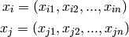
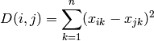

06 - K-Nearest Neighbour Classifier¶
The K-Nearest Neighbour Classifier uses feature space. Feature vectors (also known as points in the feature space) represent objects.
An arbitrary point can be nearer to another point than some other point.
Nearest Neighbours¶
We need a mathematical way to represent how far any two points are from each other. We call this distance.
If we have 2 points in a feature space:

Then the distance between  and is:
and is:

Nearest Neighbour Algorithm¶
Given the training data .
We define a distance metric between points in the input space. Common measures are:
Euclidean Distance:
City Block Distance:
Instead of the direct linear distance, City Block distance is consists of the translation necessary in order to move a point to another point.
There are other ways in which distance is recorded, but these are the main ones (but event then mainly Euclidean distance is used).
K-Nearest Neighbour Model¶
Given a test point  .
.
FInd the K (some positive number) nearest training inputs to
.This means that we calculate the distance to all other points and take the nearest K. Computationally this is not scalable and algorithms have been developed to combat this, however for now we can just calculate all the distances.
Then we denote the K nearest points as 1 through
 .
.
Then the most common class in the set is the output of the algorithm.
K-Nearest Neighbour Model¶
Picking the size of  is something the programmer must do and effects how many objects we are using to decide what the most dominant (of the nearest objects) class is.
is something the programmer must do and effects how many objects we are using to decide what the most dominant (of the nearest objects) class is.
We can train the size of K and pick the K which provides the lowest classification error overall.